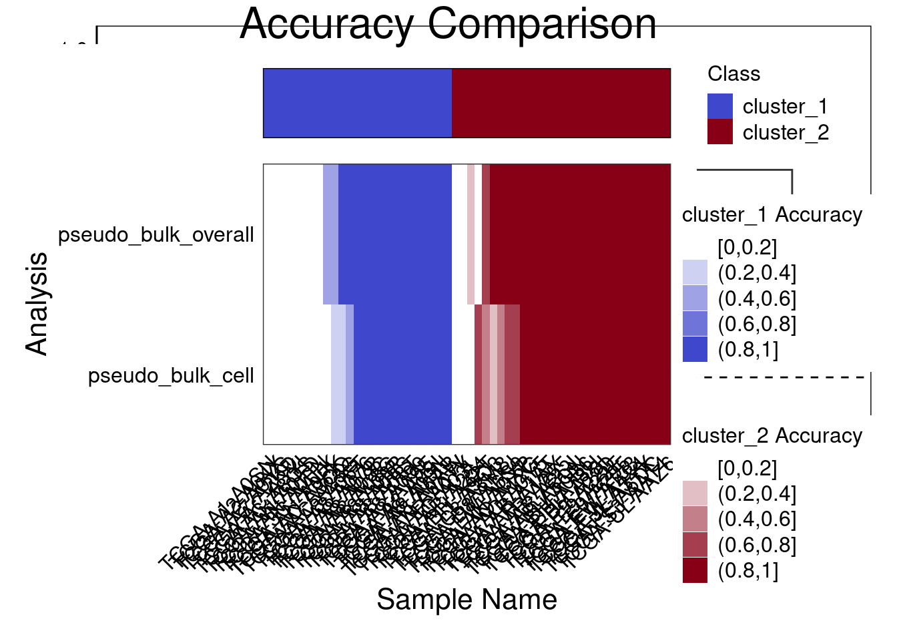
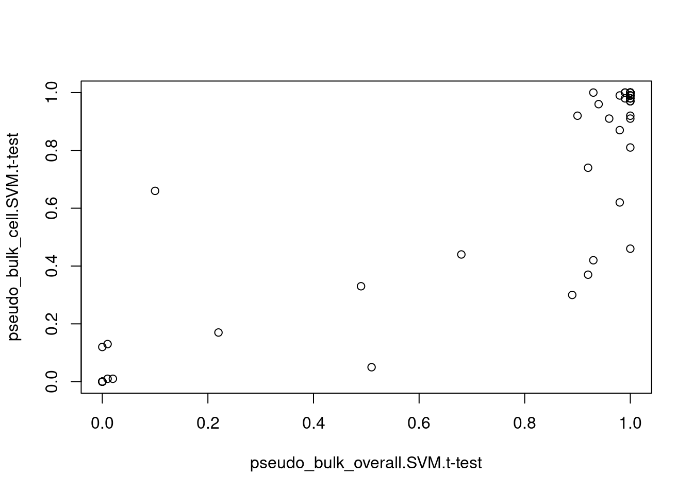
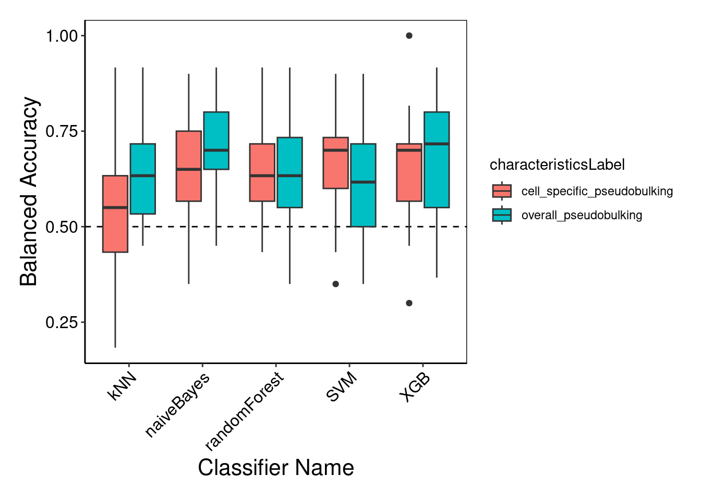

library(ClassifyR)
library(sparsediscrim)
library(tidyverse)
library(SingleCellExperiment)
library(openxlsx)
library(pROC)
library(ggplot2)
library(reshape2)2 Procedure 1
2.1 Intro
text
2.2 Next thing
more text
2.3 Final Procedure using SCM Classifier with 5% of features selected from t-test
set.seed(1)
clinical = read.xlsx("data/procedure1/clinical.xlsx")
clusters <- readRDS("data/procedure1/cluster_result_ER_and_PR_onlyER+PR+.rds")
p <- readRDS("data/procedure1/pseudobulk_overall_sum.rds")
p <- p[rownames(p) %in% clusters$sample_id, ]
p_cell <- readRDS("data/procedure1/pseudobulk_celltype_sum.rds")
p_cell <- p_cell[rownames(p_cell) %in% clusters$sample_id, ]
data = list("pseudo_bulk_overall" = p, "pseudo_bulk_cell" = p_cell)
nFeatures = list(pseudo_bulk_overall = 0.05*ncol(p), pseudo_bulk_cell = 0.05*ncol(p_cell))
outcome = as.factor(clusters$cluster)
classifyr_result3 <- crossValidate(data, outcome = outcome, classifier = "SVM", nFeatures = nFeatures, nFolds = 5, nRepeats = 100, nCores = 5)
performancePlot(classifyr_result3)
samplesMetricMap(classifyr_result3)
TableGrob (2 x 1) "arrange": 2 grobs
z cells name grob
1 1 (2-2,1-1) arrange gtable[layout]
2 2 (1-1,1-1) arrange text[GRID.text.276]classifyr_result3 <- sapply(classifyr_result3, function(results) {
calcCVperformance(results, performanceType = "Sample Accuracy")
}) # loop to calculate sample accuracy
accuracyMatrix <- sapply(classifyr_result3, function(result) performance(result)[["Sample Accuracy"]])
plot(accuracyMatrix) #scatterplot of sample accuracies for both datasets
Procedure 3: Implement Andy’s analysis
- How to use each patient’s individual accuracies - Andy uses variability to decide which omics level to use for which person - Easy-Hard analysis to identify clinical features to predict which omics will work for which person
3 Classifier Selection Plot
# classifier must exactly match these options: randomForest, DLDA, kNN, GLM, ridgeGLM, elasticNetGLM, LASSOGLM, SVM, NSC, naiveBayes, mixturesNormals, CoxPH, CoxNet, randomSurvivalForest, XGB
# Perform cross-validation for each classifier
classifyr_result <- crossValidate(
p,
outcome = outcome,
selectionMethod = "auto",
classifier = c("SVM", "kNN", "randomForest",
"naiveBayes", "XGB"), # Use the current classifier in the loop. but result will be a list of objects so it can't be put into calcCVperformance
nFeatures = 0.05 * nrow(p),
nFolds = 5,
nRepeats = 5,
nCores = 5,
characteristicsLabel = "overall_pseudobulking"
)
classifyr_result2 <- crossValidate(
p_cell,
outcome = outcome,
selectionMethod = "auto",
classifier = c("SVM", "kNN", "randomForest",
"naiveBayes", "XGB"), # Use the current classifier in the loop. but result will be a list of objects so it can't be put into calcCVperformance
nFeatures = 0.05 * nrow(p_cell),
nFolds = 5,
nRepeats = 5,
nCores = 5,
characteristicsLabel = "cell_specific_pseudobulking"
)
results_both = append(classifyr_result, classifyr_result2)
results_both <- lapply(results_both, function(results) {
calcCVperformance(results, performanceType = "Balanced Accuracy")
})
performancePlot(results_both, characteristicsList = list(x = "auto", fillColour = "characteristicsLabel")) + theme(axis.text.x = element_text(angle = 45, hjust = 1, vjust = 1)) #performancePlot is essentially ggplot, so just add one more things
4 Code Dump
df <- tibble(
data = character(length(results_both)), # Column for characteristics[4, "value"]
classifier = character(length(results_both)), # Column for characteristics[1, "value"]
sampleid = vector("list", length(results_both)), # List-column for originalNames (sample IDs)
actualOutcome = vector("list", length(results_both)), # List-column for actualOutcome
predictions = vector("list", length(results_both)), # Predictions (matched with sampleid)
averaged_predictions = vector("list", length(results_both)) # Majority rule predictions
)
for (i in 1:length(results_both)) {
df$data[i] <- results_both[[i]]@characteristics[4, ][, "value"]
df$classifier[i] <- results_both[[i]]@characteristics[1, ][, "value"]
df$sampleid[[i]] <- results_both[[i]]@originalNames # Store originalNames (sample IDs)
df$actualOutcome[[i]] <- results_both[[i]]@actualOutcome # Store actualOutcome
predictions <- results_both[[i]]@predictions
matched_predictions <- data.frame(sampleid = results_both[[i]]@originalNames, prediction_4th = predictions[, 4]) # Extract the predicted cluster
df$predictions[[i]] <- matched_predictions
majority_predictions <- matched_predictions %>%
group_by(sampleid) %>%
summarize(majority_prediction = names(sort(table(prediction_4th), decreasing = TRUE)[1]),.groups = "drop") %>%
pull(majority_prediction) # Extract the column as a vector
df$averaged_predictions[[i]] <- majority_predictions
}
df_long <- df %>%
unnest(cols = c(sampleid, actualOutcome, averaged_predictions))
# Create the scatterplot
ggplot(df_long, aes(x = actualOutcome, y = averaged_predictions)) +
geom_point(alpha = 0.7) + # Scatter points with transparency
facet_grid(data ~ classifier) + # Facet by df$data and df$classifier
labs(
title = "Scatterplot of Averaged Predictions vs Actual Outcomes",
x = "Actual Outcome",
y = "Averaged Predictions"
) +
theme_minimal()
prediction_matrix_p <- matrix(NA, nrow = 100, ncol = nrow(p), dimnames = list(1:100,rownames(p)))
prediction_matrix_p_cell <- matrix(NA, nrow = 100, ncol = nrow(p), dimnames = list(1:100,rownames(p)))
# Function to populate the prediction matrix from classifyr_result
create_prediction_matrix <- function(classifyr_result, prediction_matrix) {
# Extract data from classifyr_result
predictions_data <- classifyr_result@predictions # Entire predictions data
sample_ids_predictions <- predictions_data[, 1] # First column (sample IDs)
values_to_insert <- predictions_data[, 4] # Fourth column (values to insert)
# Match and insert values
for (i in seq_along(sample_ids_predictions)) {
sample_id <- sample_ids_predictions[i]
if (sample_id %in% colnames(prediction_matrix)) {
# Find the column index for the sample_id
col_index <- which(colnames(prediction_matrix) == sample_id)
# Insert the value into the next available row in that column
row_index <- which(is.na(prediction_matrix[, col_index]))[1]
prediction_matrix[row_index, col_index] <- values_to_insert[i]
}
}
return(prediction_matrix)
}
prediction_matrix_p <- create_prediction_matrix(classifyr_result3[[1]], prediction_matrix_p)
prediction_matrix_p_cell <- create_prediction_matrix(classifyr_result3[[2]], prediction_matrix_p_cell)
#produce density plot
outcome_last_char <- substr(outcome, nchar(as.character(outcome)), nchar(as.character(outcome)))
calculate_proportion <- function(prediction_matrix, outcome_last_char) {
proportions <- numeric(ncol(prediction_matrix))
for (i in seq_len(ncol(prediction_matrix))) {
column_values <- prediction_matrix[, i]
# Calculate the proportion of values matching the last character of the outcome
proportions[i] <- mean(column_values == outcome_last_char[i], na.rm = TRUE)
}
return(proportions)
}
proportions_p <- calculate_proportion(prediction_matrix_p, outcome_last_char)
proportions_p_cell <- calculate_proportion(prediction_matrix_p_cell, outcome_last_char)
plot(proportions_p,proportions_p_cell)
plot(density(proportions_p), col = "blue")
lines(density(proportions_p_cell), col = "red", lwd = 2)
legend(
"topright",
legend = c("P", "P Cell"),
col = c("blue", "red"),
lwd = 2
)